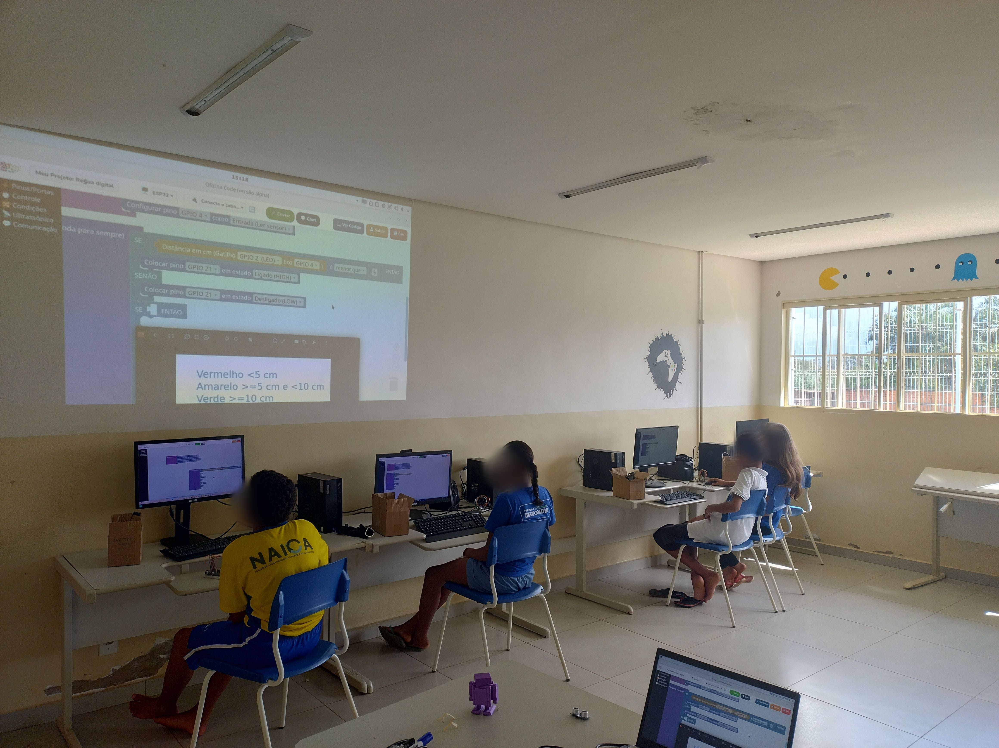
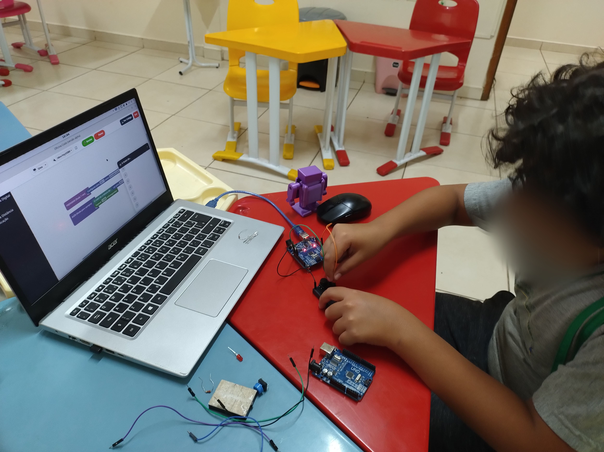

Aprenda programação
com blocos
e placas reais.
O Bloquin é uma IDE em português para estudantes iniciantes, crianças com acompanhamento e educadores. Monte a lógica visualmente, acompanhe o C++ gerado e envie o programa para Arduino ou ESP32.
Uma IDE visual criada
para aprender.
O Bloquin reduz a barreira da sintaxe no início sem esconder o que acontece: cada sequência de blocos gera C++ que pode ser consultado, compilado e enviado à placa.
Aplicativo desktop
No editor em português, você combina blocos, vê o C++ gerado, compila, acompanha o monitor serial e envia o programa por USB.
Uso em sala de aula
Contas de estudante e professor permitem organizar turmas, salvar projetos na nuvem, compartilhar atividades e acompanhar trabalhos.
Conteúdos de apoio
Uma biblioteca pública complementa a IDE com projetos, códigos, circuitos, downloads e guias rápidos de componentes.
Da ideia ao teste
em quatro etapas.
O fluxo mantém o foco na lógica e, ao mesmo tempo, mostra a relação entre os blocos, o código e o comportamento do circuito.
Escolha a placa
Crie um projeto e selecione Arduino Uno, Arduino Nano ou ESP32 DevKit V1.
Monte a lógica
Arraste e conecte blocos de controle, entradas, saídas, sensores, motores e comunicação.
Relacione com C++
Consulte o código gerado para entender como cada bloco se traduz em uma instrução.
Compile e teste
Conecte a placa por USB, compile localmente, envie o programa e observe o resultado no circuito.

Na sala de aula

Feito para começar
com apoio e contexto.
A interface visual ajuda quem ainda não domina sintaxe a concentrar-se em sequência, condições, repetição e interação com componentes reais.
Estudantes iniciantes, crianças com mediação de um adulto e educadores que precisam conduzir atividades de robótica com uma progressão clara até o código textual.

Hardware suportadoTrês placas para
começar e avançar.
A versão atual trabalha com Arduino Uno, Arduino Nano e ESP32 DevKit V1. A seleção da placa ajusta os pinos e o processo de compilação.
Arduino
Uno e Nano, duas opções conhecidas para as primeiras atividades com entradas, saídas, sensores e atuadores.
ESP32
ESP32 DevKit V1, indicado para projetos que usam mais pinos, comunicação sem fio e recursos conectados.
Um fluxo visual para
ensinar com progressão.
O Bloquin foi criado a partir de uma necessidade real em sala de aula: permitir que a turma experimente lógica e eletrônica antes que a sintaxe se torne uma barreira.
Sobre a conexão: compilar e enviar o programa à placa são tarefas locais. Login, salvamento na nuvem, turmas e acompanhamento pelo professor exigem internet.
Nasceu em
sala de aula.
O Bloquin nasceu de uma necessidade real em sala de aula. Como professor de robótica, eu precisava de uma ferramenta acessível para ensinar programação a crianças e iniciantes, mas que também trabalhasse com Arduino e ESP32.
O desafio era reduzir o esforço inicial com sintaxe e configuração sem transformar a atividade em uma simulação. Por isso, os estudantes montam a lógica visualmente, consultam o código gerado e testam o resultado na própria placa.
A proposta é acompanhar o ritmo de quem aprende: começar pelos blocos, compreender o que eles produzem e avançar para projetos cada vez mais autônomos.
Código aberto
sob licença MIT.
O código-fonte pode ser consultado, estudado, modificado e redistribuído conforme os termos da licença. O repositório também concentra versões, documentação e contribuições.
IDE visual em português para programar Arduino e ESP32 com blocos, acompanhar o C++ gerado e apoiar atividades educacionais.
Bloquin
IDE
Escolha Windows ou Linux, experimente no modo visitante ou entre com uma conta para usar os recursos conectados da turma.
Ver notas da versão e verificação SHA-256 ↗